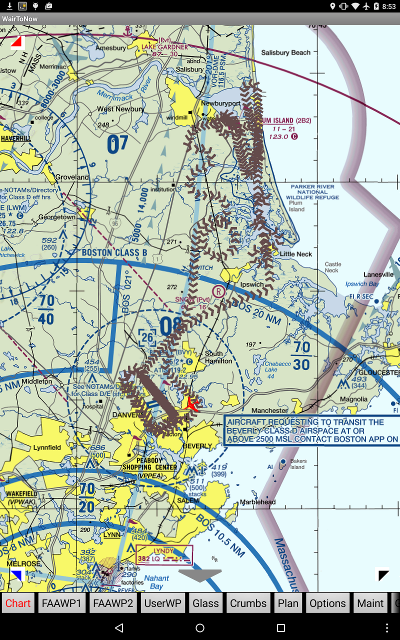

Crumbs page
This page manages breadcrumbs trails of your flights.
- Create... - creates a new breadcrumb trail
beginning with the next received GPS position.
- Previously recorded breadcrumbs trails appear as
buttons below the Create... button. Clicking
these buttons will cause the corresponding trail to
be re-drawn on the map and the beginning of the trail
will appear at the center of the screen.
- You can view the crumbs files under the
Files button, then
click on crumbs.
